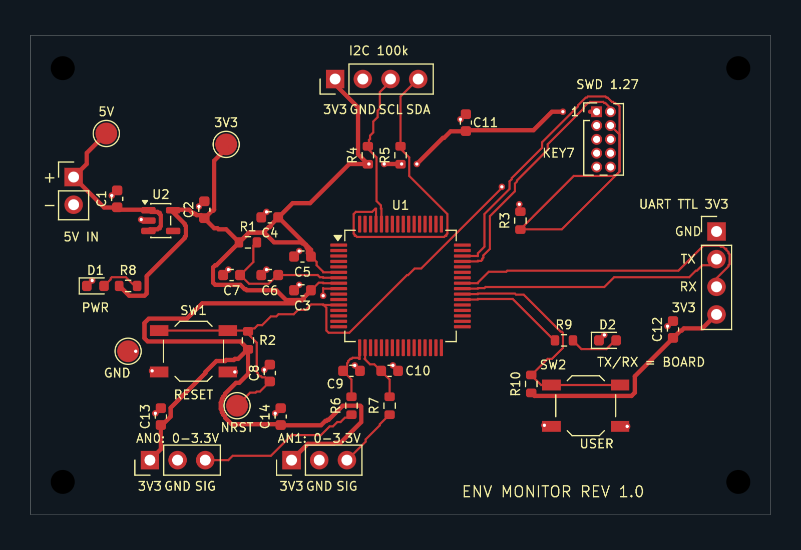
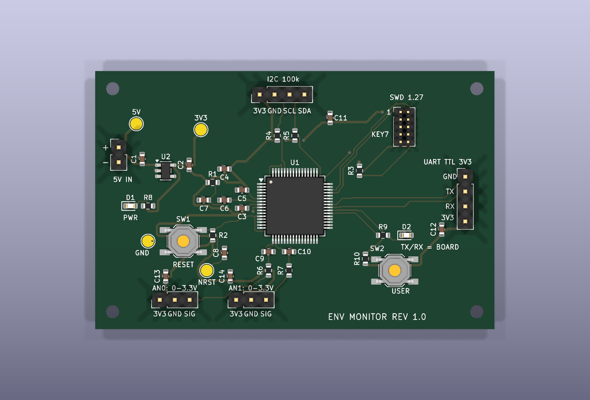
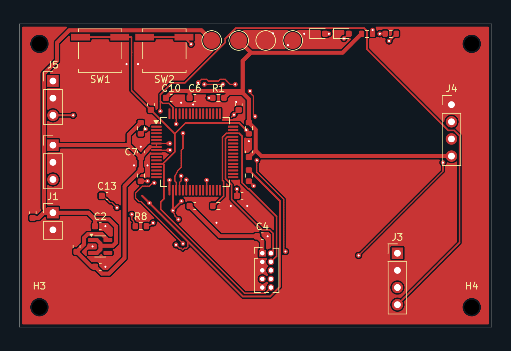
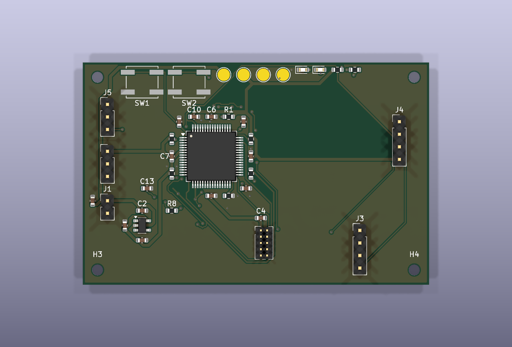

GPT-6 ASTRA · 单模型运行
GPT-6 Astra
EnvMonitor 工程产物

查看高清 PCB 图 ↗
查看高清 3D 装配图 ↗本次运行总 Token
6,813,253tokens
- GPT-6 Astra
- 6,813,253
REAL E2E EVIDENCE
录像覆盖登录、组建团队、提交需求、角色交接、Temporal 17 步执行、Reviewer 与发布产物；等待阶段仅做时间压缩。
SAME REQUEST · TWO EXECUTION PATHS
桌面环境监测主控板：STM32G070RBT6、5 V 转 3.3 V、SWD、I²C、UART 与两路模拟输入。下图直接从两份交付的 .kicad_pcb 文件导出，点击可查看高清图。
GPT-6 ASTRA · 单模型运行
EnvMonitor 工程产物

查看高清 PCB 图 ↗
查看高清 3D 装配图 ↗本次运行总 Token
6,813,253tokens
KICAD DESIGN MULTI-AGENT SYSTEM
KiCad 多agent项目工程产物

查看高清 PCB 图 ↗
查看高清 3D 装配图 ↗本次运行总 Token
6,403,499tokens
3D 模型说明：当前工程中的 SW1、SW2 未显示按钮实体，仅展示其焊盘与丝印；未人为补画模型。
1,088,606 + 5,314,893 = 6,403,499
差值比例 = (6,813,253 − 6,403,499) ÷ 6,813,253
展示口径：两侧均展示 PCB 布线图与真实工程的 3D 装配俯视图，统一使用 KiCad 10.0.4、1600 × 1100 PNG。布线图导出 F.Cu、F.SilkS、Edge.Cuts，保留原始铺铜、布线与丝印，不展示背面铜层；3D 图采用相同视角、渲染质量与本机 KiCad 模型库，未修改源板卡文件。3D 图为静态渲染，点击可查看高清图。
对比边界：同一需求的单案例展示。Token 数值由项目作者提供，均包含输入、输出及打包，本页未重跑模型或独立核对原始用量日志。模型组合和执行方式不同，不能仅据此判断架构收益、费用下降或板卡质量等价；图片展示也不代替 ERC、DRC、连通性与需求验收。
查看 Token 记录、来源文件名与 SHA-256 指纹我需要一块用于桌面环境监测设备的主控板，负责读取模拟传感器、连接 I²C 温湿度传感器，并通过串口把数据发送给上位机。这次只做硬件，不需要写固件。
主控使用 STM32G070RBT6，LQFP-64 封装，使用内部时钟。板子由外部稳定的 5 V 电源供电，电源从两针 2.54 mm 接口输入，通过 AP2112K-3.3 稳压到 3.3 V。外接传感器总电流不超过 50 mA，不需要 USB、电池或无线通信。
请把以下功能完整做在板上：
SYSTEM BOUNDARIES
浏览器只访问 Java 控制面；Python Agent 内核负责推理和工具编排；Temporal 与确定性 EDA 工具负责可恢复执行。